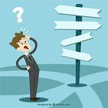
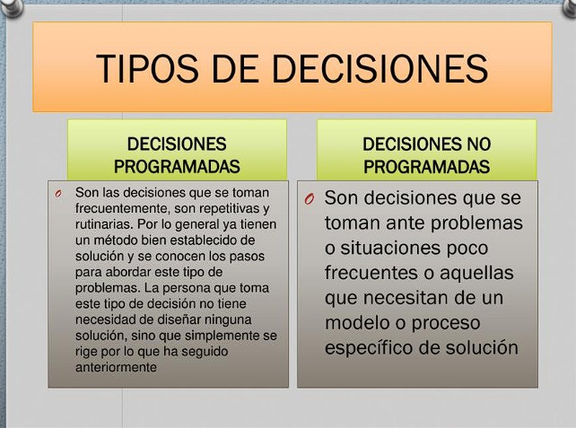
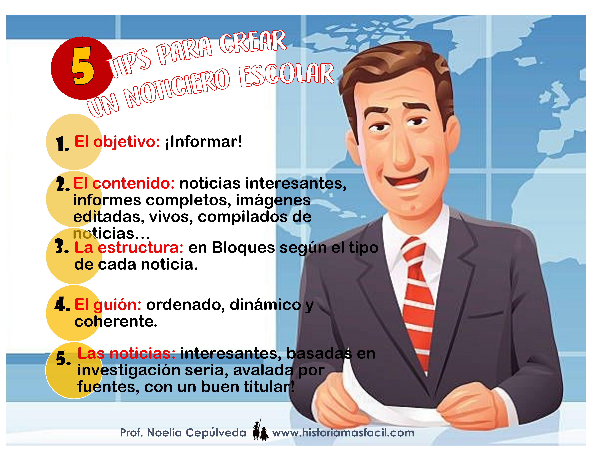
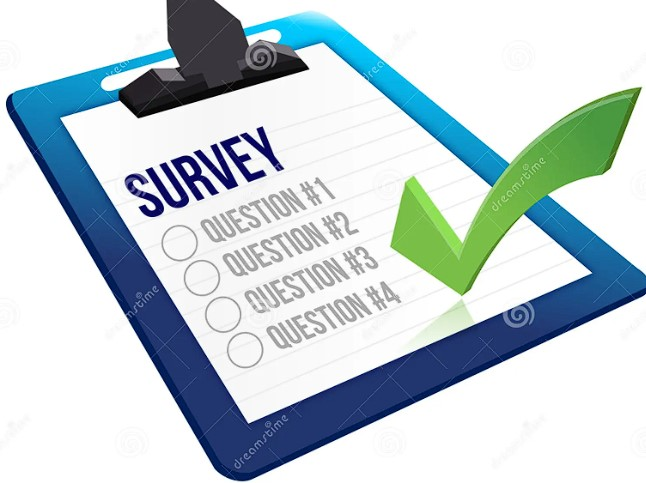

CONSIDERACIONES PARA LA TOMA DE DECISIONES
Objetivo
El objetivo de aprendizaje sobre las consideraciones para la toma de decisiones es que los estudiantes desarrollen la capacidad para identificar, analizar y aplicar los factores críticos que influyen en el proceso decisional. Al finalizar esta unidad, los estudiantes serán capaces de: Definir y enmarcar problemas de decisión de manera clara y precisa. Recopilar y evaluar información relevante y de calidad para apoyar el proceso de toma de decisiones. Generar y comparar alternativas considerando múltiples perspectivas y criterios. Anticipar y evaluar las consecuencias a corto y largo plazo de cada alternativa. Reconocer y mitigar sesgos y barreras que puedan afectar la objetividad y efectividad de sus decisiones. Aplicar enfoques racionales y creativos en la resolución de problemas complejos. Reflexionar sobre decisiones pasadas para identificar áreas de mejora y aprender de la experiencia. A través de este objetivo de aprendizaje, los estudiantes estarán mejor equipados para tomar decisiones informadas y estratégicas en diversos contextos personales y profesionales, mejorando así su competencia en la gestión de problemas y oportunidades.Introducción
La toma de decisiones es un proceso crucial en todos los aspectos de la vida, desde la esfera personal hasta la profesional. La capacidad para tomar decisiones efectivas y bien fundamentadas puede determinar el éxito o el fracaso de proyectos, el logro de objetivos y el bienestar general. En el ámbito de la toma de decisiones, es fundamental considerar diversos factores que pueden influir en el proceso y en los resultados obtenidos. Estos factores incluyen la claridad en la definición del problema, la calidad de la información disponible, la evaluación de alternativas, y el impacto de las decisiones tanto a corto como a largo plazo. Además, la toma de decisiones está sujeta a diversas barreras y sesgos que pueden distorsionar el juicio y la eficacia del proceso. Por lo tanto, es esencial abordar las consideraciones clave que impactan en la toma de decisiones para optimizar la calidad y la efectividad de las decisiones realizadas.
Desarrollo
¿En qué consiste el proceso racional de la toma de decisiones?
El proceso racional de la toma de decisiones es un enfoque sistemático y lógico utilizado por los administradores para asegurar que las decisiones se tomen de manera efectiva y eficiente. Este proceso se divide en varias etapas clave que permiten una evaluación cuidadosa de las opciones disponibles y la selección de la mejor alternativa posible. Según el documento, las etapas del proceso racional de toma de decisiones son las siguientes:
TIPOS DE DECISIONES
Las decisiones, pueden estar divididas en dos categorías. Decisión Programada: Son programadas en la medida que son repetitivas y rutinarias, así mismo en la medida que se ha desarrollado un método definitivo para poder manejarlas. Decisión no Programada: "La reestructuración de una organización" o "cerrar una división no rentable", son ejemplos de decisiones no programadas, También "la creación de una estrategia de mercado para un nuevo producto".
TIPOS DE BARRERAS PARA LA TOMA DE DECISIONES EFECTIVA
Prejuicios Psicológicos: Incluyen sesgos en la recopilación, evaluación y aplicación de información que pueden influir negativamente en la objetividad. Ilusión de Control: La creencia errónea de que uno puede influir en situaciones sobre las cuales realmente no tiene control. Efectos de Perspectiva: La manera en que se formulan o perciben los problemas puede influenciar de manera subjetiva la toma de decisiones. Presiones de Tiempo: La necesidad de tomar decisiones rápidas debido a un entorno cambiante, lo que puede llevar a decisiones menos reflexionadas¿QUE CARACTERISTICAS TIENEN LAS DECISIONES?
Claridad. Refiere a la importancia de tener en claro el objetivo a alcanzar en el proceso y la situación a resolver. • Impacto. Refiere a las consecuencias que puede traer cada una de las alternativas a elegir. Es importante tener en cuenta que todas las opciones tendrán consecuencias, por lo que se debe elegir la alternativa que genere el impacto más favorable. • Periodicidad. Refiere a la regularidad con la que los individuos o grupos toman decisiones, hay algunas decisiones que son diarias, y otras que se dan cada un cierto período de tiempo que puede ser aleatorio o determinado. Actores. Refiere a los individuos que forman parte del proceso de toma de decisiones, que pueden ser tomadas de manera individual o grupal según cada caso. • Reversibilidad. Refiere a si se puede o no dar marcha atrás en la elección de una alternativa. Mientras más irreversibles sean las consecuencias de alguna de las alternativas a elegir, más atención se deberá prestar al proceso de decisión Efectos futuros: Las decisiones cuya influencia perdura en el largo plazo, se consideran una decisión de alto nivel, mientras que aquellas destinadas al corto plazo son decisiones de nivel bajo. Calidad: Las decisiones se toman de acuerdo con la cantidad y, más aún, calidad de los factores involucrados -asuntos legales, éticos, imagen de la empresa, etcétera- y esto determinará el nivel de decisión (alto o bajo).
¿CUALES SON LAS CONDICIONES EN LAS QUE SE TOMAN LAS DECISIONES?
Certeza: Las decisiones se toman en un ambiente donde se tiene información confiable y se conocen las relaciones de causa y efecto. Riesgo: Se cuenta con información basada en hechos, aunque incompleta, y se puede estimar la probabilidad de distintos resultados usando modelos matemáticos o juicio subjetivo. Incertidumbre: No se tiene información suficiente y confiable, lo que hace difícil predecir los resultados. Las decisiones en este ambiente son más complejas y arriesgadas

Cualidades personales para la toma de decisiones
Experiencia: Ayuda a resolver problemas basándose en situaciones pasadas, aunque puede ser una desventaja si la experiencia no es relevante para el nuevo problema. Buen Juicio: Habilidad para evaluar información de manera inteligente, basada en sentido común, madurez, razonamiento y experiencia. Creatividad: Capacidad para combinar ideas de manera única y encontrar soluciones innovadoras. Habilidades Cuantitativas: Uso de técnicas y herramientas cuantitativas para analizar y resolver problemas
QUIEN SON LOS TIPOS DE PERSONAS QUE TOMAN DECISIONES
Según Edward Spanger y Max Niemeyer, en su publicación Types of Men ( Tipos de Hombres), sostienen que algunas personas que toman decisiones son tan predecibles en su forma de solucionar un problema que se pueden categorizar de la siguiente manera: • La Economista, que sólo está interesada en lo que es útil y práctico. • La Estética, cuyos más importantes valores se encuentra en la armonía y la individualidad, la pompa y el poder. • La Teórica, interesada en el descubrimiento de la verdad por sí misma; en la diversidad y la racionalidad. • La Social, que ama a la gente, considera las personas como fines y es amable, simpática y poco egoísta. • La Política, que se interesa ante todo por el poder, la influencia o el renombre. • La Religiosa, cuyo valor más importante es la mayor experiencia espiritual, la cual es absolutamente satisfactoria para ella; es una asceta que busca la experiencia a través de la propia negació
EN QUE CONSISTE EL PROCESO CREATIV0 Y SUS ETAPAS PARA LA TOMA DE DECISIONES
El proceso creativo no suele ser simple ni lineal. Por lo general se compone de cuatro fases sobrepuestas e ínter actuantes entre sí: a. Exploración inconsciente, ocurre fuera de los límites de la conciencia. b. intuición. sirve de enlace entre el inconsciente y la conciencia c. discernimiento. es resultado sobre todo del trabajo intenso d. formulación lógica. Esto se logra mediante la persistente reflexión en una idea o pidiendo críticas a los demás.

EXPLIQUE LAS TECNICAS CREATIVAS PARA LA TOMA DE DESICIONES
La creatividad puede adquirirse. Es frecuente que las ideas creativas sean fruto de grandes esfuerzos, motivo por el cual existen varias técnicas para cultivarlas, especialmente en el proceso de toma de decisiones.
Crea una tormenta o lluvia de ideas Es una técnica que se puede hacer en grupo y de forma individual. El procedimiento es ir anotando todas las ideas que tenemos con total libertad referentes a un tema. Por ejemplo: queremos poner el nombre a una empresa. Cuando terminamos de anotarlo todo, extraemos las que más nos interesen, sacamos conclusiones sobre ellas y elegimos la que finalmente será la respuesta al objetivo que teníamos en primera instancia. Las reglas son las siguientes: 2. No criticar ninguna idea 3. Mientras más extremosas sean las ideas, mejor 4. Alentar la cantidad de ideas producidas 5. Estimular el progresivo mejoramiento de las ideas ➢ Sigue las noticias para inspirarte  Una fuente de inspiración es estar atento a la información diaria que aparece en los medios. De hecho, muchos guiones se escriben señalando que están basados en hechos reales. Y es que hay noticias sorprendentes que nos pueden ayudar a escribir un libro, un ensayo, un guión y hacer que las tomemos como base para aportar otros contenidos que nos interesan. Seguir la prensa es muy importante para saber las noticias relevantes que suceden. ➢ Toma nota de experiencias ajenas Una de las opciones más interesantes es reunirnos con amigos, compañeros en actos sociales donde conversamos sobre cualquier tema. Es cuando surgen los casos y experiencias de cada uno o las referidas a conocidos de otras personas. Siempre hay algunas de esas historias que le han pasado a alguien en concreto que causan interés y que pueden servir de auténtica inspiración para crear una nueva idea. Por ello, hacer vida social y relacionarse nos abre un abanico de posibilidades muy rico para poder tomar nota de las cosas ajenas que ocurren dentro o fuera de nuestro círculo y tomar esas historias como base para crear algo nuevo e innovador
➢ Haz una lista de preguntas

Empieza por preguntas básicas para que vayan surgiendo otras más específicas.
De esa forma nos ayudará a crear más y mejores argumentos y a añadir nueva
información. Puedes empezar por: ¿qué?, ¿Dónde?, ¿Cómo?, ¿Cuándo?
Cuando las respondas, surgirán otras nuevas haciéndote que avances a un nivel
superior hasta que configures la información que necesitas.
➢ Método 635
Es un método grupal en el que se reúnen seis personas para aportar una idea sobre
un tema en concreto. Cada uno de ellos debe escribir tres ideas y cuenta con cinco
minutos para poder hacerlo. El proceso se repite durante seis veces y finalmente
cuando están todas las ideas anotadas se empiezan a escoger las más útiles para
el grupo y extraer conclusiones sobre ellas.
➢ Hacer dibujos o bocetos
 Muchas veces ocurre que tenemos una idea, pero no sabemos cómo expresarla.
Recurrir a realizar dibujos para darle forma es una estrategia muy útil para que la
creatividad surja y elaboremos un nuevo concepto. Esto nos puede servir si
queremos crear un logotipo, si queremos diseñar una web y planificar lo que
incluiría, entre otras. En resumidas cuentas, es una técnica que nos vale para
abarcar muchos temas y que nos aclarará las ideas una vez terminemos y
repasamos nuestros bocetos.
➢ Ver películas
Muchas veces ocurre que tenemos una idea, pero no sabemos cómo expresarla.
Recurrir a realizar dibujos para darle forma es una estrategia muy útil para que la
creatividad surja y elaboremos un nuevo concepto. Esto nos puede servir si
queremos crear un logotipo, si queremos diseñar una web y planificar lo que
incluiría, entre otras. En resumidas cuentas, es una técnica que nos vale para
abarcar muchos temas y que nos aclarará las ideas una vez terminemos y
repasamos nuestros bocetos.
➢ Ver películas
 Una fuente de inspiración puede ser el hecho de recurrir a ver películas, series o
televisión. En cuanto al cine hay multitud de ideas que podemos tener en cuenta,
pero darles otro enfoque. Por ejemplo. Utilizamos ideas base de películas, pero
podemos cambiar los protagonistas, la historia en la que se se realiza, el sexo de
los actores que la interpretan. Podemos trabajar con la siguiente frase, ¿qué pasaría
si? A partir de ahí coger papel y lápiz y dejar libre la imaginación cambiando todo lo
que nos gustaría de una película y adaptando esa idea a nuestros objetivos.
Una fuente de inspiración puede ser el hecho de recurrir a ver películas, series o
televisión. En cuanto al cine hay multitud de ideas que podemos tener en cuenta,
pero darles otro enfoque. Por ejemplo. Utilizamos ideas base de películas, pero
podemos cambiar los protagonistas, la historia en la que se se realiza, el sexo de
los actores que la interpretan. Podemos trabajar con la siguiente frase, ¿qué pasaría
si? A partir de ahí coger papel y lápiz y dejar libre la imaginación cambiando todo lo
que nos gustaría de una película y adaptando esa idea a nuestros objetivos.
Investigar en las redes sociales Si hay algo que podemos hacer en la actualidad es ver que se cuece en las redes sociales como fuente de inspiración. Es muy habitual que haya grupos o foros en las redes en los que la gente intercambia temas, tendencias, consejos actuales, y esa es nuestra ocasión para poder tomar nota de temas interesantes que se expongan y darles nuestro punto de vista creando una historia nueva. Existen temas que pueden estar de moda, o bien ser recurrentes que se tratan de forma diaria, podemos tomar nota de lo que queramos, de cómo se posiciona la gente en unos u otros, cuáles son los intereses de la mayoría, y eso nos puede ayudar a crear una historia de éxito. ➢ Sinéctica: se seleccionan cuidadosamente los miembros del equipo sinéctico según su aptitud para la resolución de un problema, el cual puede involucrar a toda la organización. El líder del grupo desempeña un importante papel en la aplicación de este método. De hecho, sólo él conoce la naturaleza específica del problema. Su función consiste en estrechar y dirigir cuidadosamente la discusión sin revelar el problema de que se trata. El principal motivo de ello es impedir que el grupo llegue a una solución prematura.
Apoyo didactico
Aqui se muestran algunos recursos de apoyo para el fortalecimiento del aprendizaje
Conclusión
En conclusión, las consideraciones para la toma de decisiones son múltiples y variadas. Desde la identificación del problema hasta la implementación de la decisión, cada etapa requiere un análisis cuidadoso y una evaluación de las posibles consecuencias. Al desarrollar habilidades sólidas en la toma de decisiones, podemos aumentar nuestras posibilidades de éxito tanto en la vida personal como profesional.
Actividad Practica
Preguntas de reflexion
¿Qué factores suelen influir más en tus decisiones? ¿Son las emociones, la lógica, la opinión de los demás o algo más?
¿Cómo sueles manejar la incertidumbre? ¿Te sientes cómodo con lo desconocido o prefieres tener toda la información antes de tomar una decisión?
¿Qué tan importante es para ti la rapidez al tomar decisiones? ¿Tiendes a ser impulsivo o prefieres tomarte tu tiempo?
Cómo evalúas las consecuencias de tus decisiones? ¿Consideras tanto los beneficios a corto plazo como los posibles efectos a largo plazo?
¿Qué tan a menudo te arrepientes de tus decisiones? ¿Qué puedes aprender de esos arrepentimientos?
Actividad Evaluativa
Ahora pondremos a prueba tus conocimientos
Presiona aqui para realizar la prueba